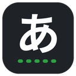

GitHub-ja へようこそ
GitHub の画面を日本語にして、用語の意味をその場で説明します。最初に表示のしかたを選んでください。あとからツールバーのアイコンでいつでも変えられます。
1Git の用語をどう表示しますか？
Pull request・Fork・Branch のような用語の出し方です。ふつうの言葉（設定・キャンセルなど）は、どれを選んでも日本語になります。
2用語の説明を出しますか？
3辞書にない文章も翻訳しますか？
設定しました。GitHub を開くと日本語で表示されます。 GitHub を開く